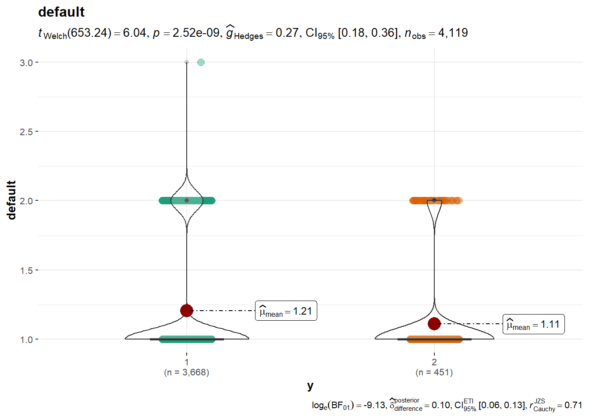

Se usó en un principio “bank-additional-full.csv”, pero por tener muchos datos, tenía un costo computacional alto, así que se cambió por “bank-additional.csv” por tener 10% de la data que el otro archivo.
# Cargar paqueteslibrary(ggplot2)library(dplyr)
Attaching package: 'dplyr'
The following objects are masked from 'package:stats':
filter, lag
The following objects are masked from 'package:base':
intersect, setdiff, setequal, union
library(ggstatsplot)
You can cite this package as:
Patil, I. (2021). Visualizations with statistical details: The 'ggstatsplot' approach.
Journal of Open Source Software, 6(61), 3167, doi:10.21105/joss.03167
library(GGally)
Registered S3 method overwritten by 'GGally':
method from
+.gg ggplot2
library(FactoMineR)library(factoextra)
Welcome! Want to learn more? See two factoextra-related books at https://goo.gl/ve3WBa
library(corrplot)
corrplot 0.92 loaded
library(glmnet)
Loading required package: Matrix
Loaded glmnet 4.1-7
library(e1071)
# Cargar el conjunto de datosdatos_marketing <-read.csv("marketing.csv", header =TRUE)datos_marketing$job <-as.numeric(as.factor(datos_marketing$job))datos_marketing$marital <-as.numeric(as.factor(datos_marketing$marital))datos_marketing$education <-as.numeric(as.factor(datos_marketing$education))datos_marketing$default <-as.numeric(as.factor(datos_marketing$default))datos_marketing$housing <-as.numeric(as.factor(datos_marketing$housing))datos_marketing$loan <-as.numeric(as.factor(datos_marketing$loan))datos_marketing$contact <-as.numeric(as.factor(datos_marketing$contact))datos_marketing$month <-as.numeric(as.factor(datos_marketing$month))datos_marketing$day_of_week <-as.numeric(as.factor(datos_marketing$day_of_week))datos_marketing$poutcome <-as.numeric(as.factor(datos_marketing$poutcome))datos_marketing$y <-as.numeric(as.factor(datos_marketing$y))
# Análisis descriptivo univariantesummary(datos_marketing) # Resumen estadístico de todas las variables
age job marital education
Min. :18.00 Min. : 1.000 Min. :1.000 Min. :1.00
1st Qu.:32.00 1st Qu.: 2.000 1st Qu.:2.000 1st Qu.:3.00
Median :38.00 Median : 4.000 Median :2.000 Median :4.00
Mean :40.11 Mean : 4.825 Mean :2.177 Mean :4.78
3rd Qu.:47.00 3rd Qu.: 8.000 3rd Qu.:3.000 3rd Qu.:7.00
Max. :88.00 Max. :12.000 Max. :4.000 Max. :8.00
default housing loan contact
Min. :1.000 Min. :1.000 Min. :1.000 Min. :1.000
1st Qu.:1.000 1st Qu.:1.000 1st Qu.:1.000 1st Qu.:1.000
Median :1.000 Median :3.000 Median :1.000 Median :1.000
Mean :1.195 Mean :2.082 Mean :1.348 Mean :1.356
3rd Qu.:1.000 3rd Qu.:3.000 3rd Qu.:1.000 3rd Qu.:2.000
Max. :3.000 Max. :3.000 Max. :3.000 Max. :2.000
month day_of_week duration campaign
Min. : 1.000 Min. :1.00 Min. : 0.0 Min. : 1.000
1st Qu.: 4.000 1st Qu.:2.00 1st Qu.: 103.0 1st Qu.: 1.000
Median : 5.000 Median :3.00 Median : 181.0 Median : 2.000
Mean : 5.295 Mean :3.01 Mean : 256.8 Mean : 2.537
3rd Qu.: 7.000 3rd Qu.:4.00 3rd Qu.: 317.0 3rd Qu.: 3.000
Max. :10.000 Max. :5.00 Max. :3643.0 Max. :35.000
pdays previous poutcome emp.var.rate
Min. : 0.0 Min. :0.0000 Min. :1.000 Min. :-3.40000
1st Qu.:999.0 1st Qu.:0.0000 1st Qu.:2.000 1st Qu.:-1.80000
Median :999.0 Median :0.0000 Median :2.000 Median : 1.10000
Mean :960.4 Mean :0.1903 Mean :1.924 Mean : 0.08497
3rd Qu.:999.0 3rd Qu.:0.0000 3rd Qu.:2.000 3rd Qu.: 1.40000
Max. :999.0 Max. :6.0000 Max. :3.000 Max. : 1.40000
cons.price.idx cons.conf.idx euribor3m nr.employed y
Min. :92.20 Min. :-50.8 Min. :0.635 Min. :4964 Min. :1.000
1st Qu.:93.08 1st Qu.:-42.7 1st Qu.:1.334 1st Qu.:5099 1st Qu.:1.000
Median :93.75 Median :-41.8 Median :4.857 Median :5191 Median :1.000
Mean :93.58 Mean :-40.5 Mean :3.621 Mean :5166 Mean :1.109
3rd Qu.:93.99 3rd Qu.:-36.4 3rd Qu.:4.961 3rd Qu.:5228 3rd Qu.:1.000
Max. :94.77 Max. :-26.9 Max. :5.045 Max. :5228 Max. :2.000
#Estadística descriptiva univariante inferencial# Utilizaremos ggstatsplot para visualizar la relación entre las variables y la categoría "y" (Resultado)ggbetweenstats(datos_marketing, x ="y", y ='age', title ='age')
ggbetweenstats(datos_marketing, x ="y", y ='job', title ='job')
ggbetweenstats(datos_marketing, x ="y", y ='marital', title ='marital')
ggbetweenstats(datos_marketing, x ="y", y ='education', title ='education')
ggbetweenstats(datos_marketing, x ="y", y ='default', title ='default')

ggbetweenstats(datos_marketing, x ="y", y ='housing', title ='housing')
ggbetweenstats(datos_marketing, x ="y", y ='loan', title ='loan')
ggbetweenstats(datos_marketing, x ="y", y ='contact', title ='contact')
ggbetweenstats(datos_marketing, x ="y", y ='month', title ='month')
ggbetweenstats(datos_marketing, x ="y", y ='duration', title ='duration')
ggbetweenstats(datos_marketing, x ="y", y ='campaign', title ='campaign')
ggbetweenstats(datos_marketing, x ="y", y ='pdays', title ='pdays')
ggbetweenstats(datos_marketing, x ="y", y ='previous', title ='previous')
ggbetweenstats(datos_marketing, x ="y", y ='poutcome', title ='poutcome')
ggbetweenstats(datos_marketing, x ="y", y ='emp.var.rate', title ='emp.var.rate')
ggbetweenstats(datos_marketing, x ="y", y ='cons.price.idx', title ='cons.price.idx')
ggbetweenstats(datos_marketing, x ="y", y ='cons.conf.idx', title ='cons.conf.idx')
ggbetweenstats(datos_marketing, x ="y", y ='euribor3m', title ='euribor3m')
ggbetweenstats(datos_marketing, x ="y", y ='nr.employed', title ='nr.employed')
ggbetweenstats(datos_marketing, x ="y", y ='emp.var.rate', title ='emp.var.rate')
#Gráfico de correlacionescor_matrix <-cor(datos_marketing[, 1:10]) # Calcular la matriz de correlaciones para las 10 primeras variables# Gráfico de correlacionescorrplot(cor_matrix, method ="color")
#PCA sobre las 10 primeras variablespca_data <- datos_marketing[, 1:10] # Seleccionar las 10 primeras variablespca_result <-PCA(pca_data, graph =FALSE) # Realizar el PCA sin graficar inicialmente# Scree plotfviz_eig(pca_result, addlabels =TRUE, ylim =c(0, 50)) # Graficar el Scree plot
#Dividir el conjunto de datos en prueba y entrenamientoset.seed(123456)train_indices <-sample(nrow(datos_marketing), round(0.7*nrow(datos_marketing))) # 70% de los datos para entrenamientotrain_data <- datos_marketing[train_indices, ]test_data <- datos_marketing[-train_indices, ]
#Entrenar y realizar la predicción del diagnóstico con Naive Bayesmodel <-naiveBayes(y ~ ., data = train_data)predicted <-predict(model, newdata = test_data)
#Obtener la matriz de confusión y calcular las métricas de evaluaciónconfusion_matrix <-table(predicted, test_data$y)accuracy <-sum(diag(confusion_matrix)) /sum(confusion_matrix)specificity <- confusion_matrix[1, 1] /sum(confusion_matrix[1, ])sensitivity <- confusion_matrix[2, 2] /sum(confusion_matrix[2, ])